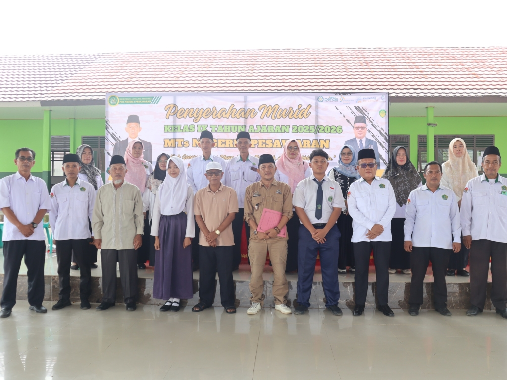
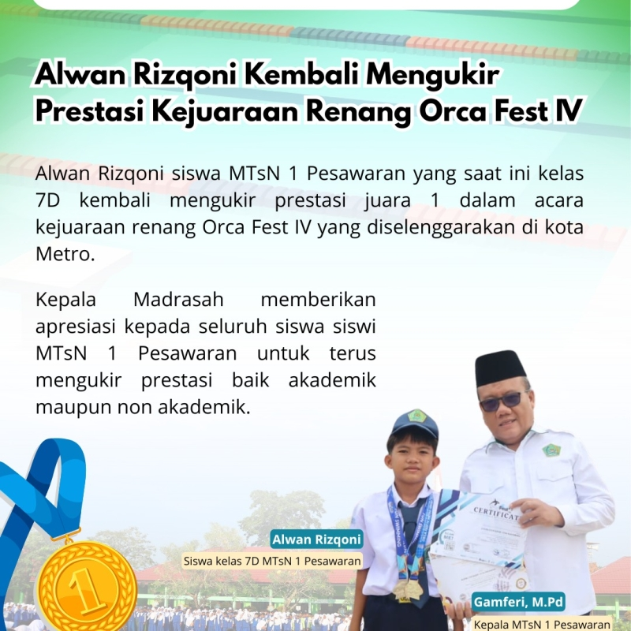
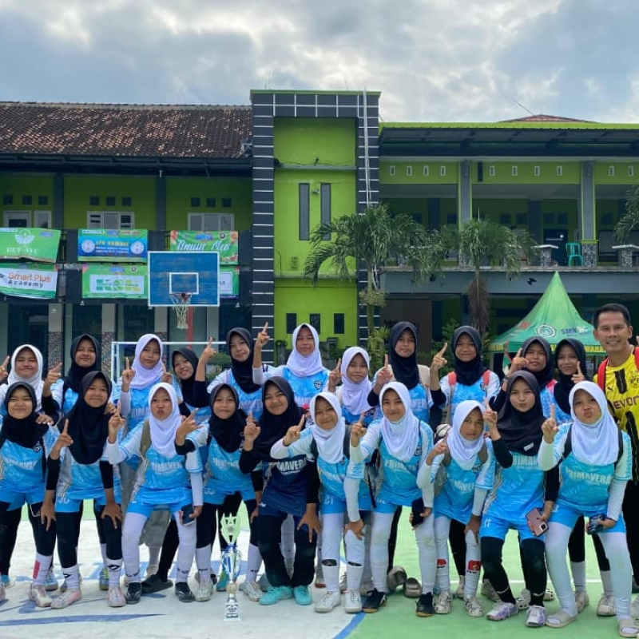
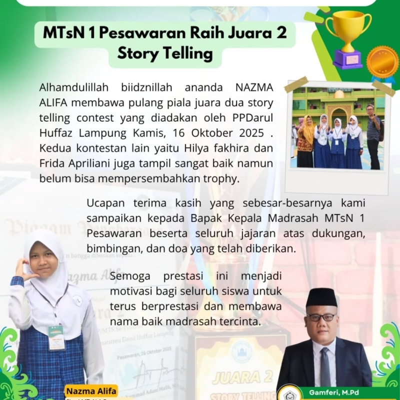
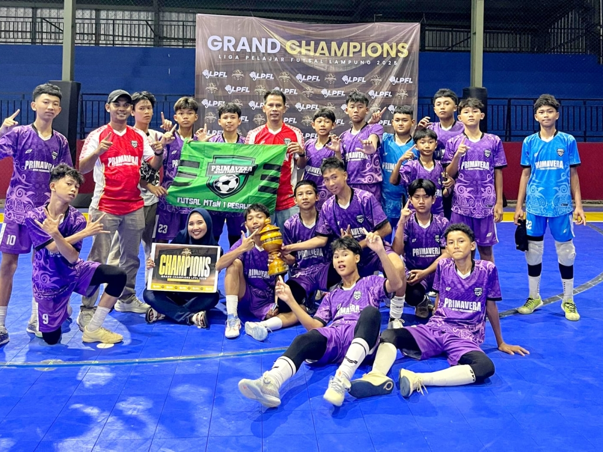
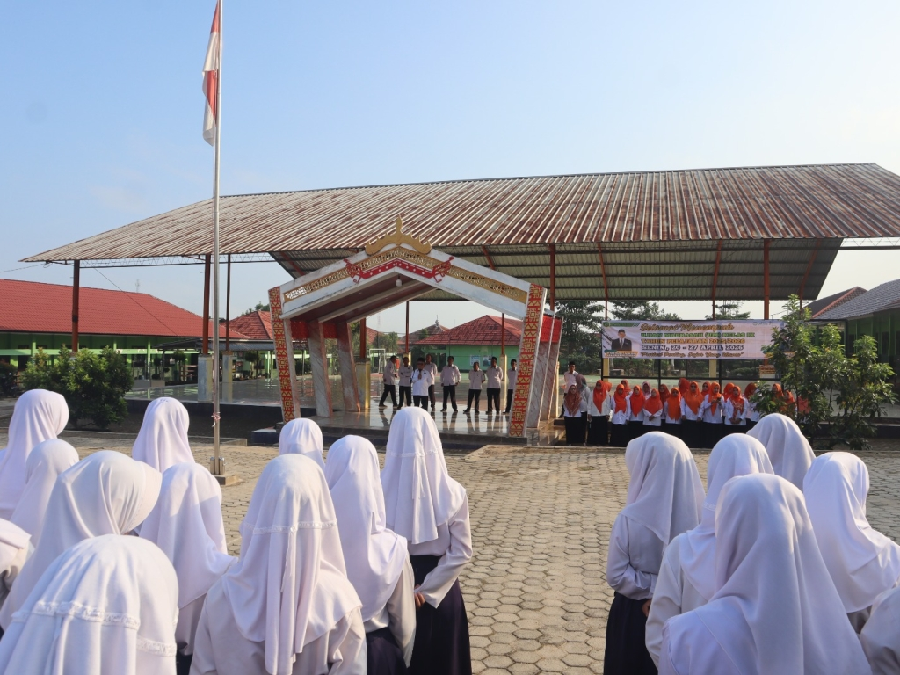
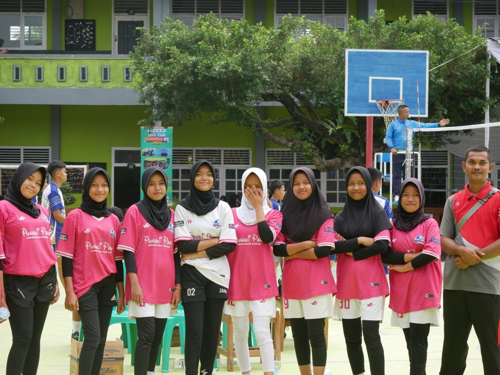
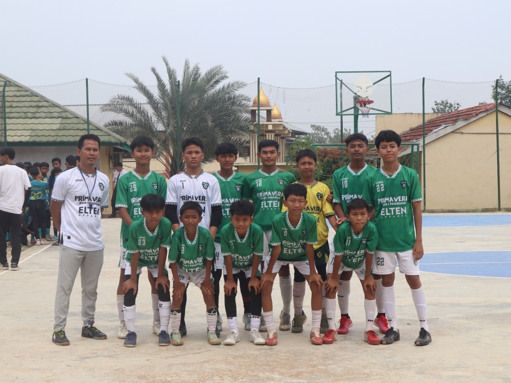
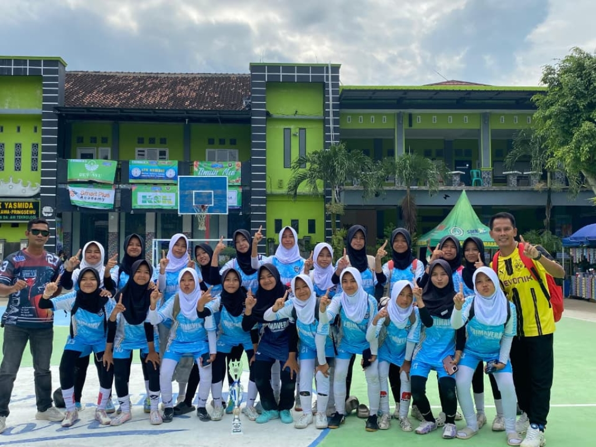

Selamat Datang Di Website
Assalamu'alaikum wr.wb. Puji dan syukur marilah kita panjatkan ke hadirat Ilahi Rabbi, atas karunia-Nya kita senantiasa diberikan kesempatan dalam rangka thalabul ilmi, mencari ilmu. Mudah-mudaham setiap derap langkah bisa membuahkan pahala bagi kita semua, menjadi penghapus dosa dan pengangkat derajat di hadapan Allah SWT. Tak lupa semoga shalawat serta salam senantiasa tercurah kepada junjungan kita Nabi Muhammad Saw, kepada keluarganya, sahabatnya, yang menjadi suri tauladan bagi seluruh umatnya hingga akhir zaman. Madrasah merupakan lembaga yang membekali siswa dengan pendidikan formal dan pengetahuan agama untuk membentuk karakter siswa yang cerdas, beriman, dan bertaqwa. Seiring dengan perkembangan zaman, selain pendidikan islam, madrasah mulai dilengkapi penguasaan teknologi informasi dan ketrampilan modern. Untuk itu, madrasah memiliki peranan penting dalam masyarakat guna mendukung peningkatan kualitas sumber daya manusia. Sesuai dengan visi misinya, Madrasah Tsanawiyah Negeri 1 Pesawaran berusaha menciptakan generasi yang SEHAT, UNGGUL, KREATIF DAN AGAMIS (SUKA), berkompeten dalam bidang IPTEK, dan memiliki ketrampilan diri. Tersedianya pembelajaran keagamaan yang lebih intens menjadi bekal siswa agar tidak hanya cerdas namun juga santun dan religius. Selain itu, MTsN 1 Pesawaran memfasilitasi siswa dengan keterampilan sesuai minat dan bakatnya, diantaranya tahfidz, kesenian (tari), tartil qur'an, drum band, dsb. Dengan demikian lulusan MTsN 1 Pesawaran menjadi generasi yang cerdas, beriman, dan memiliki skill yang baik dalam bidangnya. Untuk kemajuan pendidikan, saya mengajak putra-putri penerus bangsa agar bergabung dengan madrasah. Marilah bersama-sama berinovasi dan belajar dengan semangat demi terwujudnya generasi cerdas, santun, religius dan memiliki keterampilan diri. Kritik dan saran juga senantiasa diharapkan demi membangun madrasah yang lebih baik. Wassalamu'alaikum wr. wb.
Sistem Layanan Konsultasi Potensi Minat dan Bakat
Rapor Digital Madrasah


Tim Futsal Putri MTsN 1 Pesawaran Raih Peringkat Tiga
Selengkapnya →
Dapatkan berita teraktual mengenai pendidikan dan sekolah MTS Negeri 1 Pesawaran



Kegiatan non-pelajaran formal yang dilakukan peserta didik sekolah MTS Negeri 1 Pesawaran.



Olahraga ini dimainkan oleh dua tim yang masing-masing beranggotakan 5 (sebelas) pemain inti dan beberapa pemain cadangan
Selengkapnya